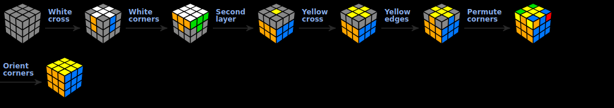
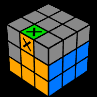
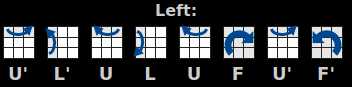
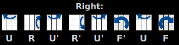
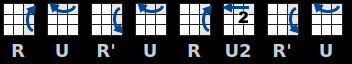
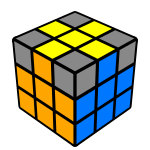
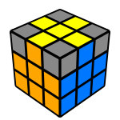
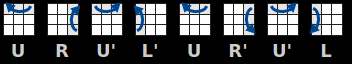
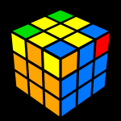
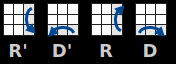

How to solve the Rubik's Cube?
There are many approaches on how to solve the Rubik's Cube. All these methods have different levels of difficulties, for speedcubers or beginners, even for solving the cube blindfolded. People usually get stuck solving the cube after completing the first face, after that they need some help. In the following article I'm going to show you the easiest way to solve the cube using the beginner's method.
The method presented here divides the cube into layers and you can solve each layer applying a given algorithm not messing up the pieces already in place. You can find a separate page for each one of the seven stages if the description on this page needs further explanation and examples.

1. White Cross
Let's begin with the white face. First we have to make a white cross paying attention to the color of the side center pieces. You can try to do this without reading the instructions.
Use this stage to familiarize yourself with the puzzle and see how far you can get without help.
This step is relatively intuitive because there are no solved pieces to watch out for. Just practice and don't give up easily. Try move the white edges to their places not messing up the ones already fixed.

Good White Cross
Sides not matching
3. Second layer
Until this point the procedure was pretty straight forward but from now on we have to use algorithms. We can forget the completed white face so let's turn the cube upside down to focus on the unsolved side.
In this step we are completing the first two layers (F2L). There are two symmetric algorithms we have to use in this step. They're called the Right and Left algorithms. These algorithms insert the Up-Front edge piece from the top layer to the middle layer while not messing up the solved white face.If none of the pieces in the top layer are already lined up like in the images below, then turn the top layer until one of the edge pieces in the top layer matches one of the images below. Then follow the matching algorithm for that orientation.

by the following algorithm, you can solve the 2nd Layer:
 
Solved below:

5. yellow Edges
After making the yellow cross on the top of the cube you have to put the yellow edge pieces on their final places to match the colors of the side center pieces. Switch the front and left yellow edges with the following algorithm:

 

6. Yellow corners on their places
Only the last layer corners are left unsolved. First we have to get them to the right spot, so don't worry about the orientation in this step.

Find a piece which is already on the right place, move it to the right-front-top corner then apply the following algorithm to switch (cycle) the three wrong pieces marked on the image.
Do this twice to do an inverse rotation of the pieces. If none of the yellow corners is on the right place then execute the algorithm once to get a good piece.
7. Orient Yellow Corners
All pieces are on their right places you just have to orient the yellow corners to finish the puzzle. This proved to be the most confusing step so read the instructions and follow the steps carefully.
Hold the cube in your hand with an unsolved corner on the front-right-top corner, then do the algorithm below twice or four times until that specific piece is oriented well:
It will look like you've messed up the whole cube but don't worry, it will be all right when all the corner pieces are oriented.Turn the top layer only to move another unsolved yellow piece to the front-right-top corner of the cube and do the same R' D' R D again until this specific piece is ok. Be careful not to move the two bottom layers between the algorithms and never rotate the whole cube!